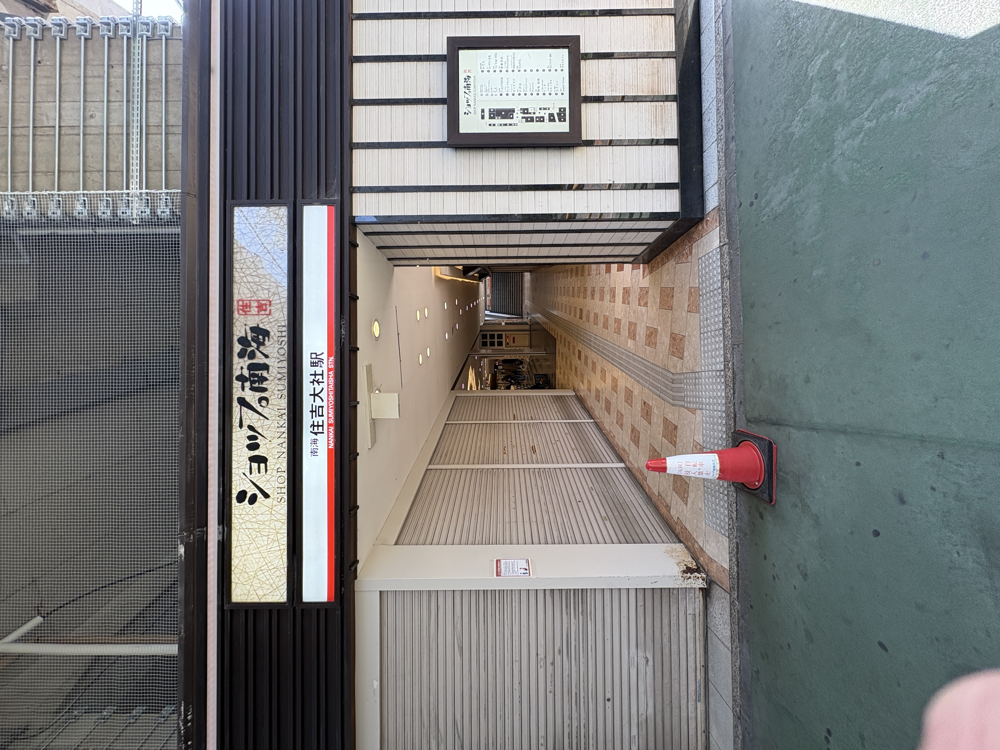
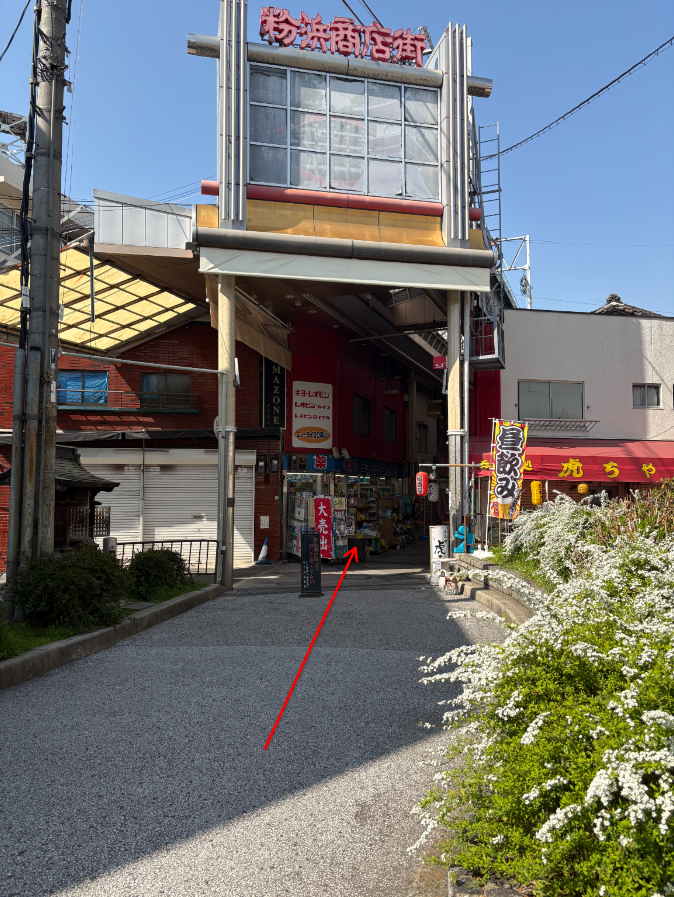

Step 1
住吉大社駅を出発 / Departure from Station
JA住吉大社駅の改札を出ます。
ENExit the ticket gate of Sumiyoshitaisha Station.
ZH从住吉大社站检票口出来。
KO스미요시타이샤 역 개찰구를 나옵니다。

Step 2
商店街を直進 / Go Straight the Street
JAアーケードのある商店街を直進します。
ENGo straight through the shopping street with the arcade.
ZH沿着有拱廊的商店街直行。
KO아케이드가 있는 상점가를 직진합니다。